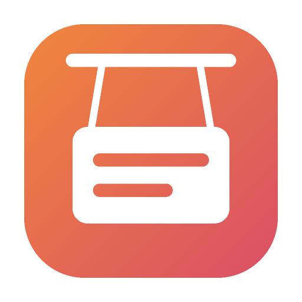

AI の返事を待つ数分で、課題をひと区切り進める
ChatGPT・Claude・Gemini に質問して返事を待つあいだ、画面の右上に「今できる一歩」がぶら下がります。大学の LMS（Moodle）や Notion から課題を集めて、AI が数分でできる一歩に分けます。
Mac でどちらか分からないときは、アップルメニュー →「この Mac について」の「チップ」の欄を見てください。「Apple M…」なら Apple のチップ、「Intel」なら Intel です。
.dmg をダブルクリックして開き、「あいま」を「アプリケーション」フォルダにドラッグします。この確認は、あいまが Apple の審査を受けていないために出ます。出るのは1回目だけで、2回目からはふつうに開けます。
aima-windows-setup.exe をダブルクリックします。青い画面は、あいまに Microsoft の証明が付いていないために、1回目だけ出ます。あいまは画面右下のタスクトレイにアイコンが出ます。右クリックで、開く・止める・終了するを選べます。
「はじめの設定」が出るので、画面の案内のとおりに進めてください。3分ほどで終わり、ターミナルは使いません。
LMS の URL・Notion のシークレット・API キーは、あなたのパソコンの中にだけ保存します。課題を分けるときだけ、選んだ AI に課題文と資料を送ります。